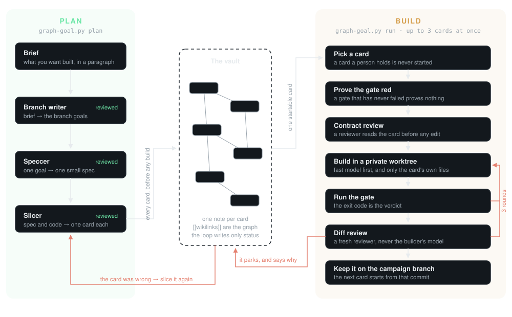

How the loop runs a card
Two commands that never overlap. Plan writes every card and builds nothing. Run builds the cards and writes none.

When a card fails
The gate fails or the diff is rejected, so the same builder tries again in the same worktree, three rounds at most. Still failing, the card parks, and nothing in the build phase rewrites it. Triage then says who was wrong: the work, so the next plan phase slices the card again, or the machine, so the card goes back once.
When the loop stops
A usage limit or a provider outage is the only thing it waits on, and it waits for as long as that takes. It also waits while another agent holds a claim on a card, because finishing that claim can free work here. When nothing is startable and nobody is working, waiting cannot help, so it hands back to the supervisor, which plans again and starts a fresh run.
Who does what
A fast model builds, with a stronger one behind it. Reviews go to models from another provider, on their own list. The model that wrote a thing never judges it, and no builder writes a gate or a card.